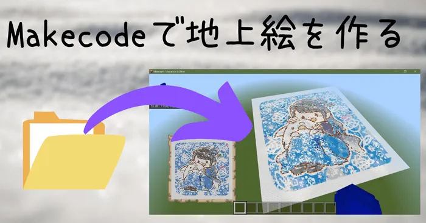
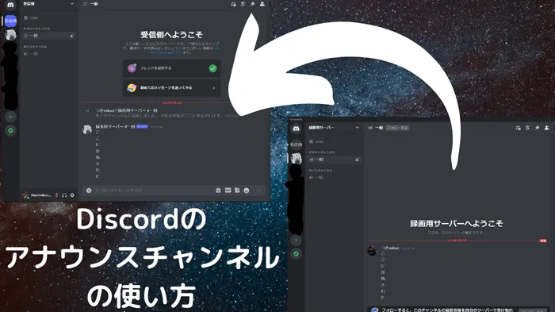
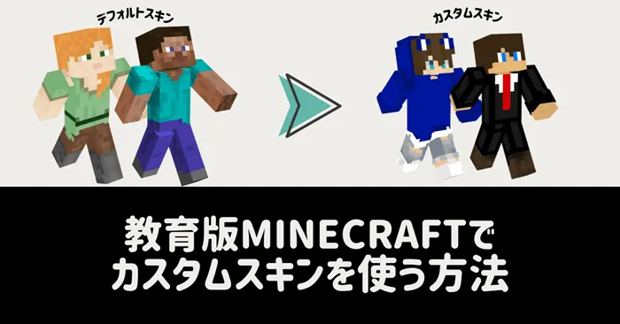
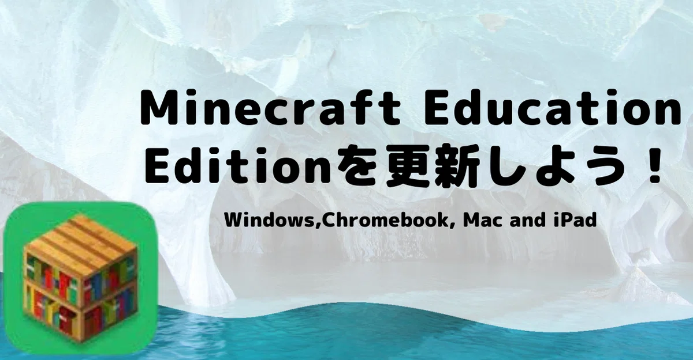
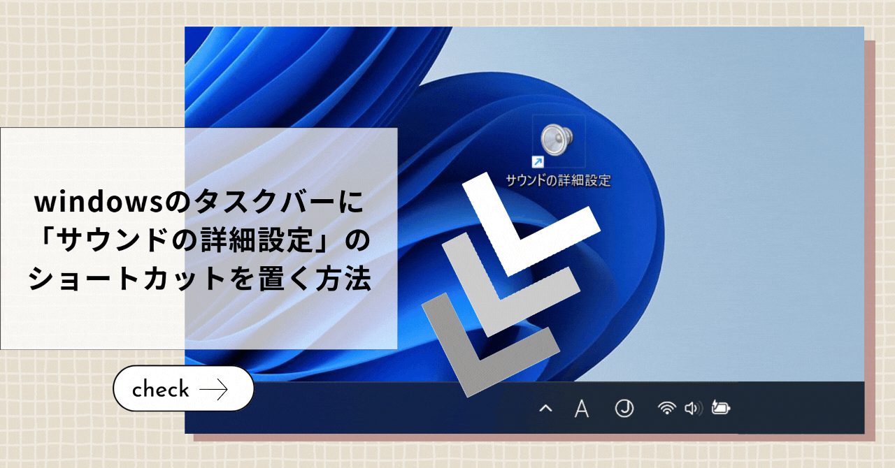
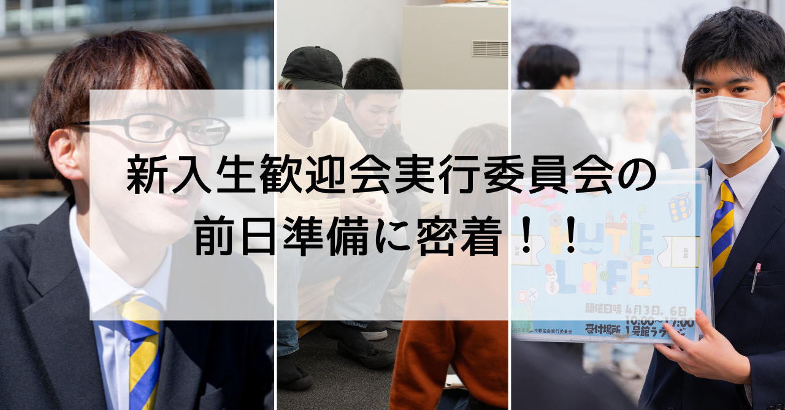
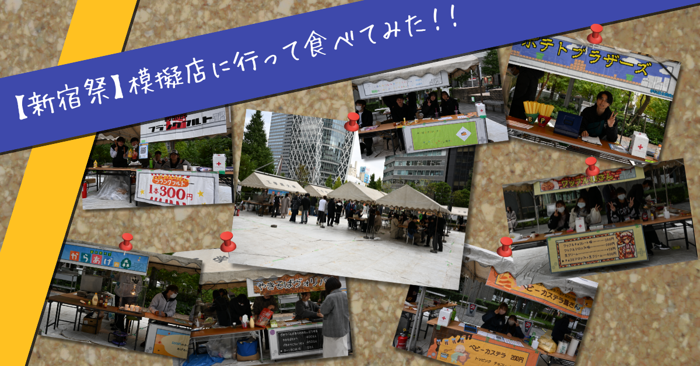
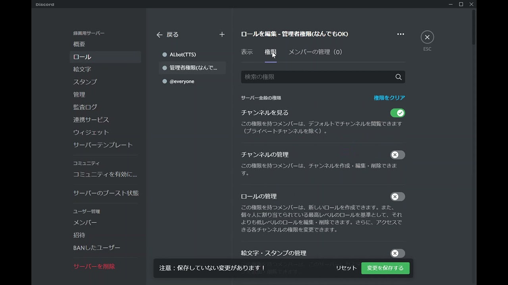
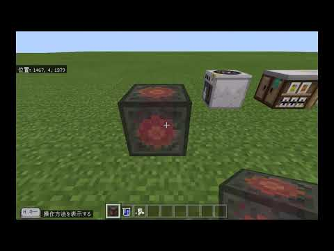

Hoshimikan6490
note.comで執筆した記事
Makecodeで
簡単地上絵作成！

Discordの
アナウンス
チャンネル
とは？

Minecraft Education Editionで
カスタムスキン
を使う方法

TweetShiftの
使い方
surface go
で
Java
マイクラ
やってみた
！！
Minecraft
Education
Edition
(教育版
Minecraft)
を
更新
しよう
！

Minecraft
Education
Edition
を
再インストール
する
方法
windows
の
タスクバー
に
「サウンドの
詳細設定」
の
ショートカット
を
置く
方法

個人noteの記事をもっと見る
大学noteの記事を見る
大学の委員会で執筆した記事
工学院大学
新入生
歓迎会
実行委員会
の
前日
準備に
密着
！！

【新宿祭】
模擬店に
行って
食べて
みた
！！

もっと見る
公開した動画
discordで人やBOTに管理者権限を与える方法

熱ブロックの作り方

旧チャンネルの動画をもっと見る
新チャンネルの動画をもっと見る
▲TOPへ戻る